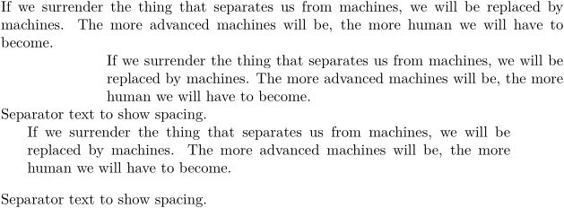

Contents
Summary
The environment
\startnarrow ... \stopnarrow
is like
\startnarrower
but with key-value options.
Settings
Settings assignment
| \startnarrow[...=...,...][...,...] ... \stopnarrow | |
| ...=...,... | inherits from \setupnarrower |
| [...,...] | [+-]left [+-]middle [+-]right number*left number*middle number*right reset reverse |
Settings name
| \startnarrow[...][...,...] ... \stopnarrow | |
| [...] | name |
| [...,...] | [+-]left [+-]middle [+-]right number*left number*middle number*right reset reverse |
Description
With
\startnarrow
, you can combine a call to
\setupnarrower
followed by
\startnarrower
into a single environment.
Examples
Example 1
The second parameter (which contains \startnarrower options) is necessary otherwise the left= and right= values are ignored.
-
% Some text to show the normal width \input jojomayer % Left only \startnarrow[left=2cm,right=0cm] [left,right] \input jojomayer \stopnarrow Separator text to show spacing. % Both sides \startnarrow[left=5mm,right=1cm,after={\blank[big]}] [left,right] \input jojomayer \stopnarrow Separator text to show spacing.
- 